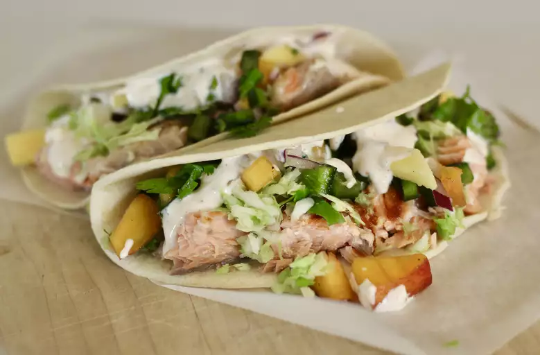

Tacos de Salmon

Tacos de salmon
Deliciosos tacos de salmon para compartir con la familia o amigos
Ingredientes Salsa de Mango
- 3 mangos, cortados en cubitos
- 2 duraznos, cortados en cubit
- 3 chiles poblanos, sin semillas y cortados en cubitos
- ½ cebolla morada, picada o más al gusto
- ½ lima, en jugo o más al gust
- manojo de cilantro, picado, dividido
Ingredientes Salsa Especial
- 1 recipiente (8 onzas) de crema agria
- 3 cucharadas de mayonesa
- 1 cucharada de salsa de tomate
- ⅛ cucharadita de pimienta de cayena molida
- sal y pimienta negra molida al gusto
- 24 tortillas de maíz (6 pulgadas)
- Spray para cocinar
- 2 libras de salmón fresco
- 1 repollo pequeño , rallado
- 3 aguacates, rebanados
- 2 limas, cortadas en gajos
Preparacion
- Combine los mangos, los duraznos, los chiles poblanos, la cebolla morada, el jugo de 1/2 lima y la mitad del cilantro en un tazón grande para hacer salsa de mango. Cubra con film transparente y refrigere, al menos 1 hora, preferiblemente durante la noche.
- Mezcle crema agria, mayonesa, salsa de tomate, pimienta de cayena, sal y pimienta negra en un tazón pequeño para hacer una salsa especial.
- Precaliente el horno a 350 grados F (175 grados C). Coloca las tortillas en una bandeja para hornear.
- Precalienta una sartén a fuego medio-alto; cubra con aceite en aerosol. Cocine el salmón hasta que se desmenuce fácilmente con un tenedor, aproximadamente 4 minutos por lado. Transfiera a un plato y desmenúcela en trozos más pequeños con un tenedor.
- Caliente las tortillas en el horno precalentado hasta que estén bien calientes, aproximadamente 5 minutos.
- Divida el salmón entre las tortillas. Cubra con salsa de mango, salsa especial, repollo rallado, aguacates y el cilantro restante. Envuelva los tacos y sirva las rodajas de lima al lado.